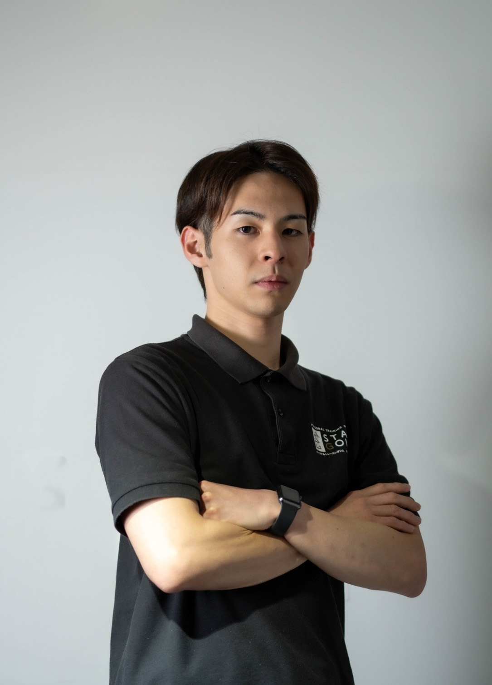

「好きなことで始めた事業なのに、
事務作業ばかりで1日が終わる」
そんなあなたへ。
話すだけで、
事業の仕組みが整っていく。
ITコーチングという
新しい選択肢。
対話であなたの想いを引き出して、仕組みまで全部つくる伴走サービス
まずは60分、話してみませんか？（無料）「好きなことで始めた事業なのに、
事務作業ばかりで1日が終わる」
そんなあなたへ。
対話であなたの想いを引き出して、仕組みまで全部つくる伴走サービス
まずは60分、話してみませんか？（無料）
好きで始めた仕事なのに、気づけば予約管理とLINE返信で1日が終わっている

「ホームページ作らなきゃ」「LINE公式やらなきゃ」…わかってるけど何から始めればいいかわからない

HP制作会社に頼んだら、専門用語の打ち合わせばかりで疲れた

InstagramやSNSで発信しても、そこからお客様が来る流れができていない

本当はもっとお客様と向き合う時間がほしい
じゃあ、どうすればいいのか。
あなたの想いを引き出して、そのままITで形にするサービスです。
普通のIT業者は「どんなものを作りたいですか？」から始まります。
TomoRevoは「あなたは何がしたいですか？」から始まります。
対話の中で、あなたが本当に大切にしたいこと・届けたい想いを引き出し、サービス紹介ページ・公式LINE・予約の仕組み・面倒な作業の自動化まで、こちらで形にします。
「でも、それって普通のIT業者とどう違うの？」
| 自分でやる （YouTubeや本で勉強） |
HP制作会社に 外注 |
ITコーチング （TomoRevo） |
|
|---|---|---|---|
| 始まり方 | 「まず何を調べれば いいんだろう…」 |
「どんなデザインに しますか？」 |
「あなたは何が したいですか？」 |
| あなたが やること |
調べる・覚える・作る、 全部自分 |
完成イメージや 素材の準備 |
想いを話すだけ。 あとはお任せ |
| かかる時間 | 数ヶ月〜 （本業の合間に少しずつ） |
1〜2ヶ月 （打ち合わせ複数回） |
最短1ヶ月〜 （あなたの時間はほぼ不要） |
| 作った後 | 自分でメンテナンス | 修正は別料金 | 事業の変化に 合わせて一緒に育てる |
| 相談相手 | いない | 作るものについてだけ | 事業全体の パートナーとして伴走 |
こんなサービス、誰がやってるの？

Yuji Fujita
1人でジムを回す苦しさも、ITで事業が変わる感動も、両方知っている。
ベンチャー企業のYouTubeチーム運営・DX推進、広告会社CTOを経て、「想いを持つ事業者のIT伴走」に特化。
ITを作れる人はたくさんいる。
話を聞くのがうまい人もたくさんいる。
でも、あなたの想いを対話で引き出して、
そのままITにできる人は、
ほとんどいません。
実際にどう変わるのか、見てみてください。
サロン経営者 Aさん（約1年間の伴走）
 Before:
Before: After:
After:
「気になるけど、具体的に何が起きるの？」
オンラインセッションで「何がしたいか」「何に困っているか」を一緒に整理。あなた自身も気づいていなかった本当の課題が見えてきます。

サービス紹介ページ・公式LINE・予約の仕組み・面倒な作業の自動化まで、全部こちらで作ります。あなたはITを覚える必要はありません。

作って終わりではなく、事業の変化に合わせて仕組みも進化させます。チャットで無制限に相談OK。

| 時期 | やること | あなたがやること | 変わること |
|---|---|---|---|
| 1ヶ月目 | 事業の全体像と課題を整理 → 最優先の仕組みから着手（例：公式LINE構築） | お話を聞かせてもらうだけ。準備は不要です | 「何から手をつければいいか」が明確になる |
| 2ヶ月目 | サービス紹介ページの作成 → 予約・決済の仕組みを連携 | 想いや伝えたいことをお話しいただくだけ。文章はこちらで作成します | お客様がサービスを見つけてから申し込むまでの流れが一本に繋がる |
| 3ヶ月目 | 全体の流れを繋げてテスト → 運用開始 → 改善 | 完成したものを確認・フィードバック | SNSで紹介するだけで、お客様が自動で予約・決済まで進む状態に |
| 4ヶ月目〜 | 事業の変化に合わせた改善・新たな仕組みの追加 | 「次はこうしたい」を伝える | 事業が成長しても、仕組みが一緒に進化し続ける |
※あくまで一例です。進め方はあなたの状況に合わせて柔軟に調整します。
自分も1人でジムを回していた時、事務作業ばかりで、好きなことに時間が使えない日々がありました。
仕組みを整えたら、お客様と向き合う時間が戻ってきた。
あの時の「ああ、これがやりたかったんだ」という感覚を、あなたにも届けたい。
あなたが本当にやりたかったこと、
ここから一緒に取り戻しませんか？
「何を相談すればいいかわからない」でも大丈夫です。
話しながら一緒に見つけていきましょう。無理な勧誘は一切しません。
 ともに革命の灯火を灯す
ともに革命の灯火を灯す